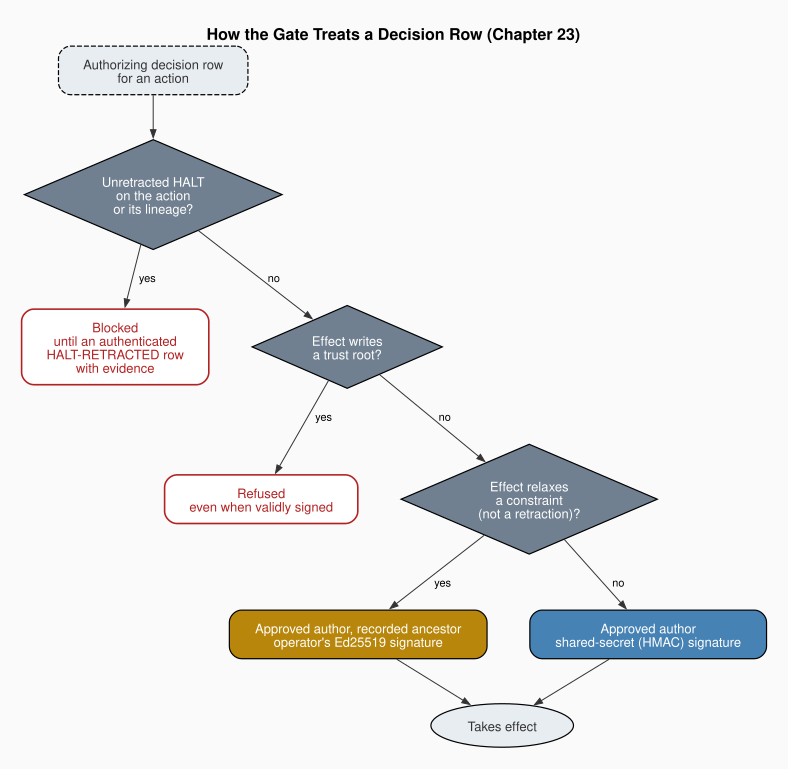

Chapter 23: Signed Authority: Waivers, Grants and Constraint-Relaxing Exceptions
Part VI: Hardening and Scale
1. The Form of Authority
When does a record of assent count as the assent of the person it names? Searle (1995) set out to explain how a world of physical particles comes to contain money, property and marriages, and his answer was the status function. A thing counts as something else in a context, and it does so only because a community recognizes the conditions under which it counts. A slip of paper is a contract when the parties sign it, and a signature counts as assent because the community takes the signer's own hand to be the condition of its existence. Remove that condition, so that anyone can produce the mark, and the paper still looks like a contract while counting as nothing.
The decision log of an agent team is a record of this kind. A row marked PASS counts as the principal's clearance, and the gate treats it so. On Searle's account, it can count that way only if the recognized conditions exclude the agents the clearance governs. The book's account of constitutional rules assumed as much. Chapter 4 followed Buchanan and Tullock (1962) in holding that rules bind "because violations can be identified and attributed, not because violation has been made impossible," and the account of the security agent placed the strongest act of attribution, the clearance of a HALT, with the human principal alone. Attribution of that kind depends on a condition neither account stated, which is that agents do not forge rows in the log. The framework's name for the human principal is the operator, and I use that name only for an operator signature.
The framework measured that condition failing. Until August 2026 its decision log was an unsigned table that any agent holding a write tool could append to, and its own record lists three breaches. A HALT was superseded by a later PASS row for the same action. A HALT was neutralised by setting the column the gate uses to prevent replay. And the agent requesting an action wrote its own PASS row, which the gate accepted as clearance. In each case the record looked like the principal's assent and was not.
A fair objection holds that accountability survived these breaches, because a forged row is still a row and an audit can find it. That is true, and it is what the earlier chapters relied on. But in each breach the forged row cleared the gate, so the trace was available only after the action it authorized had run. Signing moves the check to the gate, where the question is whether the hand that wrote the row was the principal's. The parallel with Searle has a limit. The agents recognize nothing, and the gate applies the conditions by rule, so the community of recognition is replaced by a verification routine the principal chose.
I argue in this chapter that, where key custody is confined, the authorizations that relax a constraint move from an assent recorded in a file any agent could write to a verifiable artifact. That artifact is classified by its effect, signed with a key no confined agent can read, held under caps on how many such exceptions may be active, and barred from the trust roots on which signing depends. The retraction that lifts a HALT becomes a named act that must authenticate and carry its evidence, though it needs no such key. The principal's authority keeps its scope, and for the relaxing class its exercise becomes something the constrained agents cannot imitate. Routine clearance of destructive actions is unchanged. The argument refines the book's earlier account of attribution and does not contradict it.
2. Three Instruments and a Fixed Point
An authorization endows an agent with a privilege, and the previous chapter has already taken up the principle of Miller and Drexler (1988c) that privileges are endowed through clearly defined interfaces. The framework gives each kind of authorization its own narrow interface. Its security guide sorts them by the question each answers. A clearance answers whether a destructive action may run here and now. A waiver answers whether work may proceed past a gate block. A capability grant answers whether one team may reach into another team's workspace, and it is distinct from the tool grants of the previous chapter, which are an agent's declared tools. The three are kept in separate ledgers, so that the evidence for one kind of permission can never be read as evidence for another.
Above all three sits the constitutional core. The framework's ordering of instruction authority places that core above even the principal's live instruction in a session, and lets the principal weaken it only through the waiver path, which the framework describes as deliberately ceremonial so that an override is visible. Weakening here means suspending the core's application to one act, which is what a waiver does. Amending the core is a different act, and no signed route reaches it (§5). The core's second principle, that a HALT is final, ends with the clause that a waiver never overrides a HALT. A capability grant widens a write boundary and still cannot carry its holder past a HALT on the granted write, since the HALT is checked first and no instrument is consulted for it. Unlike the adversarial agent's advisory verdicts, a veto needs a fixed point, and the HALT is the fixed point of the scheme, against which each instrument is defined.
The table adds a fourth artifact, the management directive, as a contrasting case. A directive is authenticated like the others, but it authorizes only the exact non-destructive task it names and confers no privilege the managed team lacked. Its use is to spare one re-ask, and the next chapter takes up who may issue it.
The instruments also differ in how they are signed. A symmetric signature, which the framework makes with HMAC, uses a shared secret, and anyone who holds the secret can sign. An asymmetric signature, which it makes with Ed25519, uses a private key only the principal holds and is checked against a public key that anyone may read. The difference decides who could imitate an authorization, and the table records which instrument uses which.
| Instrument | Question it answers | Effect | Ledger | Signature | Over a HALT |
|---|---|---|---|---|---|
| Clearance | May this destructive action run here, now? | Authorizes one destructive action before it runs | security-decisions.log.csv |
Decision signing where the workspace enforces it. The operator's Ed25519 signature for a constraint-relaxing decision | Never. A HALT lifts only by an authenticated retraction (§3) |
| Waiver | May this proceed past a gate block? | Lifts a block at the destructive-action or stale-intelligence gate | security-waivers.log.csv |
HMAC, with its own key | Never |
| Capability grant | May one team reach into another team's workspace? | Widens a cross-workspace write boundary at the holder's next regeneration | The holder's capability-grants.log.csv |
The operator's Ed25519 signature for a write grant. HMAC only for a grant that widens nothing | Never |
| Management directive | May a managed team proceed on an authorized, non-destructive task without re-asking? | Spares one re-ask for one exact scope and confers no privilege | The managed team's management-directives.log.csv |
HMAC, with a separate key | Never, and it cannot retract one |
The separation of questions also settles a point that Chapter 16 leaves open. That chapter treats every adjacent-repository write by the liaison as a destructive operation, cleared for the specific change, and it reads the adjacent-repo registry as a boundary rule settling who may use a shared resource. A capability grant is a boundary rule of that kind in signed form. It answers whether a reach into another workspace is permitted at all, and a clearance answers whether this act may run now. The grant therefore does not replace the liaison's clearance for each change, and neither instrument passes a HALT. A fixed point still leaves open how a HALT that nothing overrides can ever be lifted.
3. A HALT That Cannot Lapse
The previous chapter took Ulysses at the mast, as Elster (1977) read him, as its model for the switch that requires signed decisions. Chapter 10 found the logic of such self-binding in Buchanan and Tullock (1962), observing that the asymmetric default toward rejection "has the structure of a constitutional pre-commitment," a rule chosen in advance because it must function under production pressure.
A HALT is a pre-commitment of this kind, and one that a later order can dissolve binds nothing. The unsigned log let later rows dissolve it. The framework's reading of its own constitution distinguishes finality from permanence. The principle that a HALT is final does not require that a HALT last forever. What it forbids is a HALT that lapses silently, which is what the superseding PASS row had achieved. A HALT is therefore lifted only by a separate, named and authenticated act, recorded as a retraction with the verdict HALT-RETRACTED. The retraction must carry evidence for why the HALT no longer applies, and it leaves its own row in the log.
The gate enforces this by scanning every row, where it once read only the latest. A later PASS does not clear a HALT, and the replay column is ignored for the purpose. A HALT also blocks every action named in its id and passes down the recorded lineage of actions derived from the one it halted, so a renamed action whose lineage is honestly declared stays halted. The lineage is self-declared, though, and the framework states that the scan alone does not stop a hostile rename that names a harmless ancestor or none. That case falls to the classifier, which derives a row's class from its effect rather than its name, and to the stricter signing path it forces, which also requires a relaxing row to name a resolvable ancestor. Only the retraction clears a HALT, and only for the action it names. A retraction loosens a constraint, yet the framework keeps it off that stricter path. It must authenticate like any authorizing row, with an approved author and a valid signature, and it must carry its evidence, but it does not need the principal's asymmetric signature. Because the retraction is signed on that routine path with the shared decision secret, a HALT cannot lapse only while that secret stays out of every agent's environment, since an agent holding it could sign a retraction of its own.
The treatment of the two directions is deliberately unequal. A row that authorizes, whether a PASS, a conditional PASS or a retraction, must authenticate. A row that restricts, which is a HALT, is honoured whether or not it authenticates. The framework's reasoning is that requiring a signature to stop an action would make an unsigned log fail open, which is the wrong direction for a security record. The cost falls on availability. An agent that forges a HALT can stop work, and the framework accepts that cost because the forgery buys no privilege. A false stop is visible and annoying, while a false clearance is quiet and dangerous, so the asymmetry puts the burden of proof where the harm lies.
The signature is bound to what it authorizes. It covers the scope and effect columns of the row, so a clearance signed for a narrow scope cannot be widened after signing, and each row carries a digest of the row before it, so that a deleted row breaks the chain. Chapter 7 said that "the log is memory." The memory is now chained and signed. Its sentence that the halt "persists until the human principal reviews the finding and clears it" also still holds, and what has changed is the form a clearance must take to count.
The retraction rule also binds the principal, in a narrow respect. The principal may lift any HALT it judges mistaken, but it can no longer let one lapse by inattention, because only a named act with a recorded reason lifts it. Here the image of the mast fits more closely than it did for the switch, since the one who binds is among the bound.
4. Exceptions Classified by Effect
Crawford and Ostrom (1995) wanted a grammar in which institutional statements from very different settings could be compared, and they found it in the components a statement carries, among them the deontic operator that makes an action required, prohibited or permitted. The book used their grammar earlier to classify conflicts, and it serves as well to classify an authorization. On that grammar a row that moves an action from prohibited to permitted relaxes a constraint whatever its author calls it, because the change in deontic situation fixes the class. The framework's test is narrower than the grammar. What its classifier counts as relaxing is a fixed vocabulary of effects, read from decision and directive rows, and not every move from prohibited to permitted. Two such moves are stated exceptions. A waiver lifts a gate block from its own ledger under its own HMAC key and never reaches the classifier, and a retraction, which the framework counts as relaxing by definition, stays on the routine path (§3).
The framework states the corresponding rule by its content. Constraint-relaxing authorizations are derived, elevated and bounded. An authorization relaxes a constraint when its effect grants a capability, writes a governance or trust root, explicitly relaxes a constraint, or reaches across repositories. A trust root is a file on which the validity of a signature depends, such as the roster of approvers or the store of public keys. In a governed workspace such an authorization must be traceable to a recorded ancestor and inherits any ancestor's HALT. It requires the principal's asymmetric signature. It is refused outright when it targets a trust root, even when validly signed. And it is bounded by a git-tracked cap with a sunset, so that relaxing exceptions cannot multiply unnoticed. The rule closes by keeping the ordinary security clearance for routine destructive actions, and by shipping the machinery to generated teams without shipping any particular exception.
The rule gives a checkable form to approvals the team already required. When the agent-updater meets a change to an invariant core, it flags the change as requiring human approval rather than making it, and where such a change falls in the relaxing class, that approval now takes the form of an artifact the gate can verify. The rule is Rule 11 of the instructions file generated teams receive. The framework's code comments, its command-line help and the security agent it generates cite the same rule under a different number, so a reader who meets two numbers in the framework is meeting one rule.
The class is derived and never declared. The classifier reads the row's structured effect fields and its scope and verdict text together, so that neither axis can silence the other. A row may also declare its own class, but the declaration is only checked against the derived one, and a dangerous divergence refuses. When no axis decides, the row is treated as relaxing. That choice is the fail-safe default of Saltzer and Schroeder (1975) applied to classification, so that an error of sorting sends a row to the stricter path. Their principle of separation of privilege explains the elevation. A mechanism that needs two keys to open is harder to subvert than one that needs a single key. The relaxing class asks for write access plus a key held by a different party. An agent able to write the log has the first, and the second is the principal's private key, without which a valid symmetric signature verifies yet is insufficient.
The framework bounds relaxing exceptions with separate caps, and they should be kept apart. The exception registry caps the active relaxing exceptions recorded under the rule, with a default of one when the registry declares none, raised only by a visible edit to a tracked file. It guards against too many exceptions, or one that has quietly outlived its sunset, which no check on a single exception can detect. Direct-write grants carry a cap of their own, three active grants, and more than three refuses them all. Standing remediation grants carry a cap of two, which belongs to Chapter 25.
Unfreezing a surface the team has frozen is relaxing whatever the row calls the action, and the frozen set against which an unfreeze is judged comes from the recorded freeze state, never from the working brief an agent can edit, since a lowered baseline would hide the unfreeze. So are five sandbox relaxations, from disabling the operating-system sandbox to widening WASM grants. In a governed workspace each needs a decision scoped to exactly that transition and signed by the principal, and a standing one is registered under the registry's cap with a sunset. The direct-write grant the previous chapter described, which removes the orchestrator's look at each write, belongs to the class as well.
The classifier proves a relaxing effect only from a known vocabulary and from structured fields, so a relaxing effect described in unfamiliar words, with no structured effect recorded, escapes the text axis. The framework calls this ceiling coverage-bounded rather than universal, and names the durable remedy, which is that new authorizing rows declare their effect in structured form. The refusals also hold only in a governed workspace. An ungoverned one never refuses a sandbox relaxation and only prints a notice. The rule's refusal for trust roots marks off what no signature can reach.
On the rule's number. At the time of writing, the numbering hazard reaches this book's own team. Its instructions file lists the constraint-relaxing rule as Rule 11, its security agent cites the rule under the framework's other number, and its orchestrator's own Rule 11 is a different rule entirely, the one requiring the liaison and the security agent for cross-repository writes. Naming the rule by its content is the only reference that survives all three files.

5. Roots Beyond the Reach of Any Signature
A signing regime rests on the things that define a valid signature: the roster of approvers, the store of public keys, the signing secrets, the integrity manifest and the constitution. If a signed row could rewrite any of them, the next signature would certify itself, and the regress would end with whoever signed first. Chapter 10 met the same regress in the judicial function and concluded that "judicial independence requires institutional separation, not just functional separation," because an auditor that resolved its own conflicts would face no external review. The book placed invariant cores beyond any automated workflow for a similar reason. The framework applies that reasoning to its trust roots.
Those roots are non-eligible. A row that would write one is refused before any signature is checked, so that a valid signature cannot buy an ineligible effect, even the principal's own. Changes to the roots go through a separate privileged process. The account of the orchestrator held that changing the authority hierarchy requires the principal to edit the orchestrator's agent file directly, and that remains the path, since signed rows open authenticated routes for many changes but none for the constitution, which is among the roots. A capability grant reads its roster of approvers from the team directory and ignores a copy at the project root, since a project-root roster is exactly what an agent inside the sandbox could plant. And a grant does nothing until the principal regenerates the holding team, so no runtime path exists by which an agent widens its own boundary. The security agent, as the book described it, has no write capabilities on the surfaces that enforce the grant. The agent that judges an action also cannot sign for it, and no agent mints its own warrant.
The key raises the confinement problem of Lampson (1973), in the sense the previous chapter fixed, with covert channels out of scope. A signing key is safe only if no agent can read it and pass it on. The framework reads the principal's private key only in the operator signing commands, in one pinned module, and keeps it in a directory that every emitted sandbox read-denies and the confinement launcher masks in every run. The denial holds only where custody is confined, which means under a wired sandbox or the launcher. Outside them, a process running as the principal's user can read the directory, and the emitted sandbox the previous chapter described is inert until merged. The shared secret for capability grants is weaker still, since a sandboxed Claude process inherits it. For that reason a capability grant that widens a write boundary must carry the principal's asymmetric signature, and a symmetric write grant is refused everywhere.
The framework also states the limit of its signing path. The module that signs does not defend against unpinned code running in the same process, which can patch what it reads. Its requirement that the principal confirm the payload, and its refusal to sign from an install an agent can write, it describes as speed bumps for an honest operator. A symmetric signature stops a forger without the key and does nothing against a holder of the key. My advice to anyone adopting signed authority follows from that limit. Sign from a verified install outside every agent write root, and treat the confinement of the key as a condition to check, the same way the previous chapter treated a sandbox.
6. What the Principal Still Decides
Chapter 4, following Buchanan (1979), called the constitutional moment for the individual an act of self-creation, in which a person who chooses the rules under which he will act chooses the kind of actor he will be. The principal who adopts signed authority makes a choice of that kind. It decides in advance that its assent will count only in a form the agents cannot produce, and that a HALT will end only by a named act. The decision binds the principal's later conduct as well as the agents'. It does not transfer any power away from the principal.
Every decision that belonged to the principal in the account of the security agent still belongs to it. The principal clears the HALT, grants the capability, approves the exception and decides when the exception has run its course. A signature carries a decision and does not make one. What changed is the evidence the gate accepts that the principal has decided. Buchanan and Tullock's condition, that a rule binds because a breach can be traced to whoever committed it, now has an instrument at the gate. By the previous chapter's test that instrument is prevention of a narrow kind. The gate checks the signature before the act, so a forged clearance cannot take effect wherever decision signing is enforced. On the stricter path that holds where key custody is confined. On the routine path it holds only while the shared decision secret is kept out of every agent's environment, since sandboxed commands inherit exported variables. What the gate cannot prevent is the forging itself.
The claim holds only in governed workspaces, where decision signing is enforced. The key is beyond the agents' reach only where custody is confined. The retraction carries the ordinary decision signature and its evidence, not the principal's private key. The classifier's coverage is bounded by its vocabulary and by whether rows declare their effect. Provider enforcement of declared tools varies as the previous chapter recorded. Within those bounds, an exception that relaxes a constraint can be authorized only by the hand of the person the constraint protects, and the agents it binds cannot imitate that hand.
The remaining chapters of this part carry the instruments outward. The next places the management directive in a layer of authority above the team, the one after lets an executor open remediation only under a standing grant the principal has signed, and the synthesis in Chapter 26 records the authenticated HALT among the team's institutions, where the observation that the system "does not author a new constitution for itself" finds its mechanism in the non-eligible roots of §5.